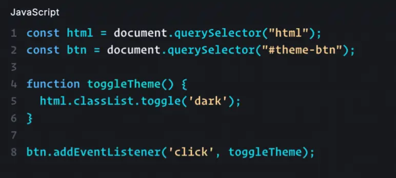

Sindets stodder

Emergency Site
Jeg valgte at lave et emergency site om "Stodder-tanker", fordi mental sundhed ofte føles som en akut situation, der kræver hurtig hjælp. Når ens tanker bliver til en "stodder" altså bliver negative, hårde eller destruktive har man brug for et værktøj, der kan skabe ro med det samme. Jeg ville skabe et visuelt univers, der tager de her svære følelser alvorligt, men med en metafor (stodderen), som gør det lettere at tale om og forholde sig til.
Læring
Jeg har lært en del om, hvordan JavaScript og CSS arbejder sammen, men jeg må også indrømme, at **Light og Dark Mode** var det sværeste. Det lykkedes mig desværre ikke at få det til at virke i denne opgave. Selvom jeg forstår teorien om, at en `toggle`-funktion i JavaScript skal skifte en klasse i HTML, så var det en stor udfordring at få CSS-variablerne til at reagere rigtigt. Det har lært mig, at fejlfinding tager tid, og at det kræver præcision at forbinde logikken med designet.
Proces
Min proces har været præget af en del eksperimenter. Jeg har brugt meget tid på at få layoutet på plads, så overskrifter og billeder står rigtigt. For at holde styr på koden har jeg brugt **Git**, så jeg kunne gemme mine fremskridt. Da jeg sad med tema-skiftet og ikke kunne få det til at fungere, brugte jeg meget tid på at tjekke mine selectors i JavaScript for at se, om de overhovedet fik fat i de rigtige elementer.
Løsning
Resultatet er et "Emergency Site", hvor jeg har fokuseret på at skabe et klart visuelt udtryk for "stodder-tankerne". Da selve teknikken bag Light/Dark mode drillede og ikke kom til at virke, har jeg i stedet prioriteret at få overskriften "Emergency Site" centreret helt præcist og skabt den rette luft i designet med `margin-top`. Selvom funktionen mangler, står siden nu skarpt og overskueligt for brugeren.
I dette forløb har jeg lært om javascript, som skal forbindes til en HTML som man gør ved at indsætte script src="js/main.js" i bunden. Derudover lærte vi om hvordan javascript styrer specifikke funktioner på siden. Varibaler bruger dem til at gemme informationer eller elementer fra din HTML (f.eks. const knap = document.querySelector("#mode-btn"), så du kan styre dem senere. Det er her, du laver logik. Du kan få siden til at tjekke: "Hvis brugeren har klikket her, så gør dette".
Forms bruges til at indsamle brugerdata via felter som input, og kræver event.preventDefault() i
JavaScript for at
stoppe siden i at genindlæse ved afsendelse. Ved at bruge .value kan du udtrække det, brugeren har
skrevet, og bruge
logik til at give direkte feedback på siden.

Git versionsstyring var også under dette tema, og Git fungerer som en logbog over din kode, hvor du bruger git commit til at gemme dine fremskridt som "sikre punkter". Det gør det muligt at rulle fejl tilbage og gemme dit projekt sikkert online via git push.
Dermed lærte vi om dialog En Dialog er et popup-vindue, der bruges til vigtige beskeder eller valg, og som styres med JavaScript-metoderne .showModal() og .close(). Det adskiller sig fra almindeligt indhold ved at ligge i et øverste lag, som tvinger brugeren til at tage stilling, før de kan klikke videre på siden.
Tilsidst i temaet lærte vi om Animationer og light and dark mode. Men animationer skaber flydende overgange eller bevægelser, ofte ved at JavaScript tilføjer en CSS-klasse, der udløser en transition eller @keyframes. Dette giver brugeren visuel feedback og gør oplevelsen af siden mere professionel.
Light og Dark Mode fungerer ved, at en knap med en click-event trigger funktionen toggleTheme. Denne funktion bruger classList.toggle('dark') på html-elementet til at skifte mellem lyst og mørkt tema.
